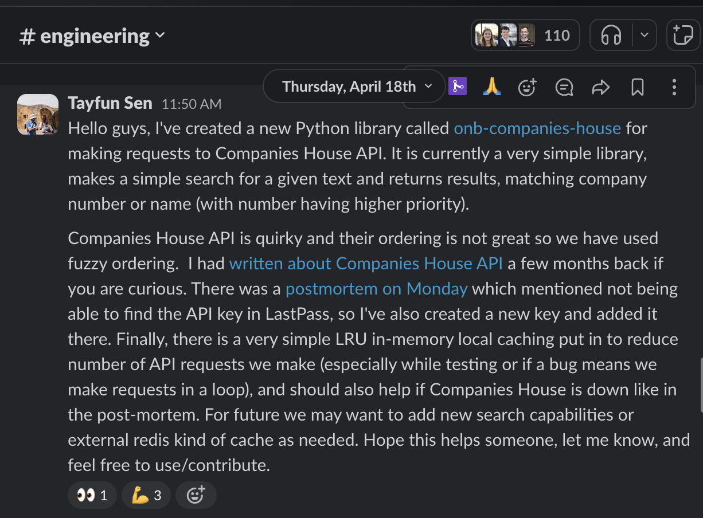

Microservices
vs 🥊
Shared Libraries
Companies House Use Case
Tayfun Sen
How it all started
Few months back...
Feature for Loan Origination (RIP!) using Companies House APIs
I ran into many problems...
- Rate limiting (restricted to a few hundred queries a minute)
- API key management
- response caching
- response transformation / sorting
- response validation
- pagination
- error handling
- logging
- response mocking / tests
- ... and many more
Back then, I
Back to the future 🕰️
- We need another CH feature, this time for Term Sheets
- First instinct: Piggy back on another service (cdd-business-knowledge)
- After discussions we decide to implement on our side
- There was also a recent post-mortem - Companies House went down and various parts of mobile app broke
What are the options?
- Other libraries on Github (none seem suitable for our use case - perhaps because of simple use cases)
- A microservice just for proxying Companies House and transformations?
- A new onb-* shared library?
Pros of microservices
- Once deployed it can be used by any other service
- Since it is on its own infra stack, can utilise redis etc. easily and once
- For Companies House implementation, it is truly a micro implementation
Cons of microservices
Pros of libraries
- Easy to start, implement
- Can be integrated to any service very easily
- Can be used to enrich existing b/e response without an extra network request/redirection
Cons of libraries
- Library depends on the using service for infra needs (eg. redis cache)
- Every library user has to configure it separately (eg. API keys, redis endpoint etc.)
We chose to create lib
onb-companies-house

We chose to create lib
onb-companies-house
We chose to create lib
onb-companies-house
- And more importantly, next time you have a common problem, think about creating a shared library (or a microservice?)
Thanks for
coming to my ted talk! 🙇